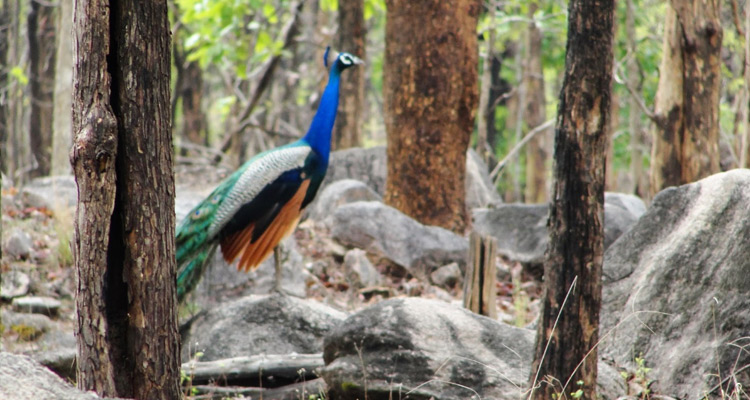

Chhindwara. Named after the pristine River Pence which flows through the park, Pench National Park is
one of the most popular wildlife reserves in India. The park also has its mention in the famous story
of 1894, ‘The Jungle Book’, penned down by the renowned English Author Rudyard Kipling. The story was
worldwide applauded, and hence, the national park became one of the popular national parks in the world
in the 1970s and also a prominent tourist attraction in India. Since then, every year oodles of wildlife
buffs flock to this place just to spot the famous characters of the book, Akela (The Indian Wolf),
Raksha (the female Wolf), Baloo (Sloth Bear), and the vicious Shere Khan (Royal Bengal Tiger).
Sprawls over
a massive area of 758 sq km, including the core area, Pench National Park has a rich wildlife which
proffers visitors an opportunity to indulge into one of the finest wildlife experiences in India.
Since its inception in 1965 as a wildlife sanctuary, the park has serving as the cosy nest of numerous
wild creatures including the Royal Bengal tiger, jackal, peafowl, wild dog, wild boar, sloth bear,
Indian leopard, fox, striped hyena, monkey, gaur, barking deer, four-horned antelope, Indian wolf,
and more such enthralling species. However, later in the year 1975 and 1992, the sanctuary got the
recognition of national park and tiger reserve, respectively.
Image Gallery
 |
||||
|  |  |
|
Rating: | 5/5 stars
total 8896 reviews |
Pench Tinger Reserve Address: Sillari Gate, NH44, from Pauni take left, Nagpur, Maharashtra, 441401, India |
Pench National Park Nagpur Phone 07692 223794 09212 777223 |
HOME